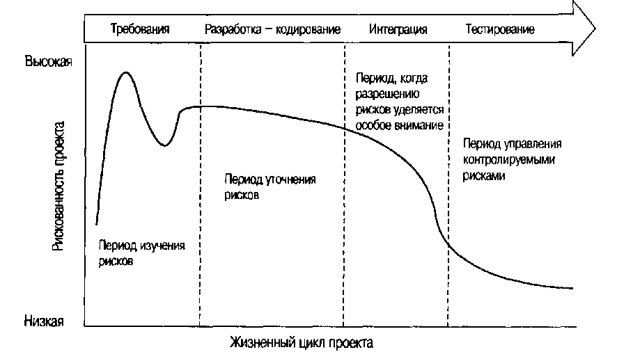

<div class="row">
  <div class="article">
    <div class="title">
      Организация коллективной работы программистов
    </div>
    <div class="paragraph">
      Самым лучшим качеством ПО является его гибкость: запрограммировать можно практически все что угодно. Худшим
      качеством ПО также является его гибкость. Это самое «практически все что угодно» сильно затрудняет планирование,
      мониторинг и управление разработкой ПО.
    </div>
    <div class="paragraph callout">
      Непредсказуемость — первопричина того, что в последние 30 лет называли «кризисом ПО».
    </div>
    <div class="paragraph">
      В середине 90-х гг. были предприняты по крайней мере три важные попытки анализа состояния индустрии разработки ПО.
      Результаты были представлены в Patterns of Software Systems Failure and Success (Образцы успехов и неудач систем
      ПО) [Jones, 1996], в «Chaos» («Хаос») [Standish Group, 1995] и в Report of the Defense Science Board Task Force on
      Acquiring Defense Software Commercially (доклад научного совета по обороне, касающийся задачи увеличения
      количества ПО для оборонных целей, получаемого на коммерческой основе) [Defense Science Board, 1994], В приложении
      А приведены некоторые результаты, имеющие отношение к этому вопросу.
    </div>
    <div class="paragraph">
      Эти три аналитических исследования привели к одному и тому же выводу: процент успешных проектов по созданию ПО
      чрезвычайно низок. По некоторым моментам имелись разногласия, но основные посылки хорошо согласовывались и
      дополняли друг друга. Выводы заключались в следующем:
    </div>
    <ul class="list-group">
      <li class="list-group-item">
        1. Разработка ПО по-прежнему абсолютно непредсказуема. Только около 10% проектов по
        созданию ПО оказываются успешными, укладываясь в первоначальные бюджетные и временные рамки.
      </li>
      <li class="list-group-item">
        2. Управление определяет успех или неудачу в большей степени, чем технологические преимущества.
      </li>
      <li class="list-group-item">
        3. Количество «выброшенного на свалку» и переделанного ПО является показателем незрелости процесса.
      </li>
    </ul>
    <div class="paragraph">
      Эти три работы ясно продемонстрировали сложность проблемы и современные нормативные показатели эффективности
      традиционного управления разработкой ПО. Здесь есть что совершенствовать.
    </div>
    <div class="paragraph">
      В завершение главы дается обобщение процесса управления созданием ПО, который использовался в большинстве
      традиционных проектов. Поскольку у этого подхода, известного как водопадная (waterfall) модель, существует много
      производных, он является основополагающим для большинства проектов, опыт по которым накоплен к настоящему моменту.
      Обобщать всегда опасно, поэтому методы усовершенствования процесса, обсуждаемые на протяжении книги, должны
      рассматриваться в подходящем контексте.
    </div>
    <div class="subtitle">
      Водопадная модель
    </div>
    <div class="paragraph">
      Большинство трудов по программной инженерии представляет водопадную модель как основу «традиционного» процесса
      создания ПО. Я же склонен рассматривать ее как показатель уровня этого процесса. Сначала мы изучим и подвергнем
      критике теорию водопадной модели, а затем посмотрим, как традиционный процесс создания ПО используется в
      промышленных целях. В действительности при промышленном подходе большинство теорий игнорируется, однако водопадной
      модели удается служить основой для многих удачных примеров (и многих неудачных), особенно при совместном
      применении с современными технологиями.
    </div>
    <div class="subtitle">
      В теории
    </div>
    <div class="paragraph">
      В 1970 г. мой отец, Уинстон Ройс, опубликовал в IEEE WESCON статью «Managing the Development of Large Scale
      Software Systems» («Управление разработкой широкомасштабных систем ПО») [Royce, Winston, 1970]. Эта статья,
      основанная на уроках, извлеченных им в процессе руководства большими проектами по разработке ПО, и по сей день
      остается наиболее цитируемым источником по водопадной модели. В статье представлено глубокое и краткое изложение
      философии традиционного управления разработкой ПО того времени, и многие из рекомендаций тридцатилетней давности
      выдержали проверку временем, несмотря на большие изменения в технологии.
      В статье были приведены три основополагающих момента.
    </div>
    <ul class="list-group">
      <li class="list-group-item">
        1.
        Разработка компьютерных программ состоит из двух основных этапов: анализ и кодирование.
      </li>
      <li class="list-group-item">
        2. Для того чтобы иметь возможность управлять и контролировать всю ту интеллектуальную свободу, которая присуща
        процессу разработки ПО, необходимо ввести несколько «сверхнормативных» этапов, включающих в себя определение
        системных требований, определение требований к программному обеспечению, разработку программы и тестирование.
        Эти
        этапы дополняют этапы анализа и кодирования.
      </li>
      <li class="list-group-item">
        3. Основной подход, описываемый водопадной моделью, является весьма рискованным и допускает неудачное
        завершение.
        Стадия тестирования, находящаяся в конце цикла разработки, - первый момент, где можно определить реальное время
        выполнения, объем занимаемой памяти, скорость ввода/вывода и т. д., чтобы сравнить их со значениями,
        установленными при анализе. Изменения, внесенные в программу, могут оказаться настолько разрушительными, что
        требования к ПО, на которых основывалась разработка программы, окажутся невыполненными. В таком случае придется
        либо пересмотреть требования, либо внести существенные изменения в структуру программы.
      </li>
    </ul>
    <div class="paragraph">
      Пункт 1, кажущийся по началу тривиальным, ниже будет развернут в одну из моих основных тем, касающихся управления:
      отделение стадии разработки от стадии производства.
    </div>
    <div class="paragraph">
      Семь из девяти страниц статьи посвящены описанию пяти условий, которые необходимы для усовершенствования основного
      водопадного процесса и могли бы исключить многие риски при разработке, указанные в пункте 3. Обсудим подробнее эти
      пять пунктов.
    </div>
    <div class="subtitle">
      Проектные решения первичны
    </div>
    <div class="paragraph">
      Прежде всего необходимо включить стадию предварительного проектирования программы между стадией формирования
      требований к ПО и стадией анализа. Таким способом разработчик программы может убедиться в том, что она не окажется
      непригодной из-за изменения объема занимаемой памяти, времени выполнения и данных. При переходе к стадии анализа
      разработчик программы должен передать аналитику налагаемые ограничения по времени, памяти и операциям таким
      способом, чтобы тот смог оценить последствия. Если суммарные требуемые ресурсы окажутся неприемлемыми либо если в
      проект изначально вкрались ошибки, это будет установлено на ранней стадии, и итерация с определением требований и
      предварительным проектированием может быть повторена до начала основного проектирования, кодирования и
      тестирования.
    </div>
    <div class="paragraph">
      Начинайте процесс проектирования с разработчиками программ,
      а не с аналитиками или программистами.
    </div>
    <div class="paragraph">
      Продумайте, опишите и распределите режимы обработки данных, обращая внимание на риск появления возможных ошибок.
      Распределите функции обработки, создайте базу данных, установите время выполнения, определите интерфейсы и режимы
      взаимодействия с операционной системой, опишите режимы ввода/вывода и предварительно определите эксплуатационные
      процедуры.
    </div>
    <div class="paragraph">
      Составьте обзорный документ - понятный, информативный и соответствующий текущему положению вещей - с тем, чтобы
      каждый работающий над проектом мог получить из него детальное представление о системе.
    </div>
    <div class="paragraph callout">
      Существо схемы процесса, представленной в последующих главах, — упреждающая разработка архитектуры
      (architecture-first development). Хотя некоторые термины могут меняться (например, вместо термина «проект
      программы» используется термин «архитектура»), существо современного процесса соответствует приведенным здесь
      объяснениям. Как будет описано ниже, архитектура первична, она определяется и разрабатывается параллельно с
      планированием и формированием требований, являясь одной из составляющих частей стадии разработки проекта.
    </div>
    <div class="subtitle">
      Документируйте проект
    </div>
    <div class="paragraph">
      Объем документации, необходимой для компьютерных программ, довольно велик; он намного больше того объема, который
      готовы создать программисты, аналитики или разработчики программ, если оставить их наедине со своими компьютерами.
      Зачем же требуется так много документации ? (1) Каждый разработчик должен обмениваться информацией с
      разработчиками интерфейсов, менеджерами и, возможно, заказчиками. (2) На ранних стадиях документация - это и есть
      проект. (3) Истинная ценность документации заключается в том, что она позволяет поддерживать на более поздних
      этапах изменения, выполняемые отдельной группой тестирования, отдельной группой сопровождения и группой
      эксплуатации, которые не знают ПО.
    </div>
    <div class="paragraph callout">
      Если не обращать внимания на технологические несоответствия того времени, когда была написана статья, то существо
      посылки «документируйте проект» остается в силе. Понятное изложение основных моментов, доступное всем исполнителям
      и группам, по-прежнему остается существенным. Однако по причине больших изменений, произошедших с системами
      обозначений, языками, браузерами, инструментами и методами, необходимость во многих документах отпала. В
      последующих главах я отстаиваю ту точку зрения, что сосредоточивать свое внимание на документации ошибочно и
      непродуктивно. Это является следствием того, что сегодняшние технологии поддерживают скрупулезные и
      самодокументируемые системы обозначений для описания требований, структур и реализаций.
    </div>
    <div class="subtitle">
      Выполняйте работу дважды
    </div>
    <div class="paragraph">
      Если компьютерная программа разрабатывается впервые, добейтесь того, чтобы версия, которая в конце концов попадет
      к заказчику для реального использования, была бы на самом деле второй, хотя бы для наиболее критичных
      проектных/эксплуатационных решений. Заметьте, что это всего лишь миниатюрная копия полного процесса, требующая
      соответственно малых затрат времени.
    </div>
    <div class="paragraph">
      Работающая над первой версией команда должна быть особенно компетентна, что позволит быстро обнаружить проблемные
      точки в проекте, смоделировать их и альтернативные им решения, не обращая внимания на очевидные аспекты
      разработки, которые несущественны на ранних стадиях, и в результате получить программу, свободную от ошибок.
    </div>
    <div class="paragraph">
      Это — краткое и упрощенное описание упреждающей разработки архитектуры. Ответственность за начальную разработку
      возлагается на «архитектурную группу». Обобщение такой практики приводит к появлению подхода «выполняйте работу N
      раз», на котором основывается современная итерационная разработка (см. ниже).
    </div>
    <div class="paragraph callout">
      Без этого первого прохода менеджер проекта вынужден полагаться на мнение разработчиков. С «моделированием» же
      первого прохода у него появляется возможность экспериментальной проверки некоторых ключевых гипотез. Но во всем
      остальном ему придется полагаться на человеческую оценку, которая в области разработки компьютерных программ (так
      же, как и при определении максимально допустимого взлетного веса, стоимости проекта или победителя на скачках)
      неизменно и существенно оптимистична.
    </div>
    <div class="paragraph">
      Это замечательное описание духа итерационной разработки и присущих ей преимуществ в управлении рисками.
    </div>
    <div class="subtitle">
      Планируйте, контролируйте и следите за тестированием
    </div>
    <div class="paragraph">
      Без всякого сомнения, самым главным потребителем ресурсов, выделенных на проект (человеко-дней, машинного времени
      и/или управленческого анализа), является стадия тестирования. Эта стадия наиболее рискованна с точки зрения
      стоимости выполнения и соблюдения графика работ. Она обычно является завершающим этапом, когда вернуться назад и
      пойти по другому пути вряд ли возможно (или вообще невозможно).
    </div>
    <div class="paragraph">
      Три предыдущие рекомендации имели целью поиск и
      исправление ошибок до начала стадии тестирования. Однако даже при соблюдении этих рекомендаций все равно
      приходится переходить к стадии тестирования и все равно остаются некоторые важные вещи, которые необходимо
      выполнить, а именно: (1) задействовать группу специалистов для проведения тестирования, которые не несут никакой
      ответственности за исходную разработку; (2) выполнить визуальные проверки для обнаружения очевидных ошибок, таких
      как отсутствие знаков «минус», пропуск множителей двойки, переход по неверному адресу (не следует использовать
      компьютер для выявления подобного рода ошибок, это слишком накладно); (3) протестировать все логические ветви
      программы; (4) произвести окончательную проверку на том компьютере, на котором будет применяться программа.
    </div>
    <div class="paragraph callout">
      Среди этих советов есть несколько хороших и несколько устаревших. Пункты 1 и 4 по-прежнему важны. Пункт 2 на
      сегодняшний день является распространенным способом проверки качества (применение инспекций ПО), но его цель в том
      виде, в котором она изложена здесь, устарела.
    </div>
    <div class="paragraph">
      Подобный подход мог быть хорошим и эффективным по стоимости при использовании технологии 1970 г., но не
      современных подходов. Компьютеры, компиляторы, анализаторы и прочие инструменты являются более эффективными
      механизмами поиска очевидных ошибок. Что касается пункта 3, то тестирование всех логических ветвей программы и в
      1970 г. было уже довольно непростой задачей даже без учета тех сложностей, которые привнесли распределенные
      повторно используемые компоненты и другие усложняющие факторы. И конечно же, это абсолютно неосуществимо для
      большинства со-временных систем. Особенно это касается распределенных вычислений, для которых время является
      дополнительным измерением, а число логических ветвей практически бесконечно. В современном процессе тестирование
      происходит на протяжении всего жизненного цикла, что, при правильном его выполнении, требует намного меньше
      суммарных ресурсов и позволяет находить ошибки на более ранних стадиях жизненного цикла, когда еще существует
      возможность использования альтернативных решений.
    </div>
    <div class="subtitle">
      Привлекайте к работе заказчика
    </div>
    <div class="paragraph">
      По ряду причин проектные решения являются предметом, допускающим широкую интерпретацию даже после достижения
      предварительного соглашения. Важно привлечь клиента к работе формальным путем с тем, чтобы он был вовлечен в
      разработку на ранних ее стадиях и до окончательной сдачи проекта. Существуют три стадии, следующие за определением
      требований, на которых введение в курс дела, оценки и участие заказчика могут способствовать успеху разработки.
      Это «предварительный обзор ПО», следующий за этапом предварительной разработки программы, серия «критических
      обзоров структуры ПО» в процессе разработки программы и «окончательный обзор принимаемого ПО», который идет за
      тестированием.
    </div>
    <div class="paragraph callout">
      Введение в курс дела использовалось в течение многих лет, и везде результаты оказывались положительными.
      Привлечение заказчика к предварительным демонстрациям и к оценке альфа/бета-версий является проверенной и ценной
      практикой.
    </div>
    <div class="paragraph">
      Я всегда восхищался тем, насколько проницательной оказалась эта статья. В то время как многие тратили всю свою
      энергию, пытаясь опровергнуть подход, предлагаемый водопадной моделью, мне удалось найти минимальное количество
      изъянов в этой теории, даже с учетом применения ее в контексте современной технологии. Критике следовало бы
      подвергнуть практику использования этого подхода, которая включает в себя некоторые необоснованные и неработающие
      элементы. Я подозреваю, что большинство критиков никогда по-настоящему не понимали этой теории; они знакомы лишь с
      обычной практикой.
    </div>
    <div class="paragraph">
      На протяжении всей книги я буду ссылаться на практику применения в прошлом и в настоящем того подхода, который
      предлагается водопадной моделью и который далее при обсуждении называется «традиционным» подходом к управлению
      процессом создания ПО. Я готов поспорить, что этот процесс не является хорошим подходом для современных разработок
      и технологий, и я буду использовать его в качестве отправной точки при рационализации процесса с целью его
      усовершенствования, что позволит избавиться от некоторых его врожденных пороков.
    </div>
    <div class="subtitle">
      На практике
    </div>
    <div class="paragraph">
      Несмотря на рекомендации многих экспертов и теорий, более поздних по отношению к водопадной модели, в целом ряде
      проектов по-прежнему используется традиционный подход к управлению созданием ПО. Поскольку в настоящее время его
      применение сокращается, я буду говорить о нем в прошедшем времени.
    </div>
    <div class="paragraph">
      Сформулируем краткие характеристики традиционного процесса в том виде, в котором он обычно использовался, что,
      вообще говоря, может и не совпадать с тем, как он должен был использоваться на самом деле. Проекты, в которых
      приходилось сталкиваться с трудностями, зачастую имели следующие проблемы:
    </div>
    <ul class="list-group">
      <li class="list-group-item">
        1. Затянувшаяся интеграция и позднее обнаружение ошибок, допущенных при разработке
      </li>
      <li class="list-group-item">
        2. Позднее разрешение рисков
      </li>
      <li class="list-group-item">
        3. Функциональная декомпозиция, определяемая требованиями
      </li>
      <li class="list-group-item">
        4. Противостояние между участниками проекта
      </li>
      <li class="list-group-item">
        5. Чрезмерное внимание, уделяемое документации и совещаниям для обмена мнениями
      </li>
      <li class="list-group-item">
        6. Затянувшаяся интеграция и позднее обнаружение ошибок, допущенных при разработке
      </li>
    </ul>
    <div class="paragraph">
      При тех несовершенных языках и технологиях, которые использовались в традиционном подходе, особое внимание
      уделялось прежде всего тщательной «разработке ПО», и только после этого начиналось создание ПО на языке
      программирования, когда понимание и внесение изменений становится затруднительным. Подобная практика предполагала
      применение множества различных форматов (требования — на естественном языке, предварительная разработка — в виде
      блок-схем, детальная разработка — на языках разработки программ, а окончательная реализация — на языках
      программирования, таких как FORTRAN, COBOL и С) и чреватых ошибками, трудоемких переводов из одного формата в
      другой.
    </div>
    <div class="paragraph">
      Традиционные методы, применявшиеся в процессе разработки при использовании водопадной модели, неминуемо приводили
      к запоздалой интеграции и к устойчивым системным ошибкам в работе программы. В традиционной модели вся система
      создавалась сначала на бумаге, затем целиком реализовывалась, затем интегрировалась. И только по окончании этого
      процесса становилось возможным тестирование системы, позволяющее убедиться в том, что основная архитектура
      (интерфейсы и структура) разработана правильно. Одной из распространенных особенностей проектов, для реализации
      которых применяется традиционный подход, является то, что на проведение тестирования тратится 40% или более от
      всех ресурсов.
    </div>
    <div class="paragraph">
      В следующей таблице представлено типичное распределение затрат по всему спектру действий, выполняемых при создании
      ПО.
    </div>
    <div class="panel panel-default">
      <div class="panel-heading">
        Затраты на различные виды деятельности в традиционном проекте
      </div>
      <table class="table table-bordered table-striped">
        <thead>
        <tr>
          <th class="col-md-8">Деятельность</th>
          <th class="col-md-4">Затраты</th>
        </tr>
        </thead>
        <tbody>
        <tr>
          <td>Менеджмент</td>
          <td>5%</td>
        </tr>
        <tr>
          <td>Определение требований</td>
          <td>5%</td>
        </tr>
        <tr>
          <td>Проектирование</td>
          <td>10%</td>
        </tr>
        <tr>
          <td>Кодирование и тестирование модулей</td>
          <td>30%</td>
        </tr>
        <tr>
          <td>Интеграция и тестирование</td>
          <td>40%</td>
        </tr>
        <tr>
          <td>Ввод в действие</td>
          <td>5%</td>
        </tr>
        <tr>
          <td>Создание среды разработки</td>
          <td>5%</td>
        </tr>
        <tr>
          <td>Всего</td>
          <td>100%</td>
        </tr>
        </tbody>
      </table>
    </div>
    <div class="subtitle">
      Позднее разрешение рисков
    </div>
    <div class="paragraph">
      Одной из серьезных проблем, связанных с водопадной моделью, являлась невозможность раннего разрешения рисков. Это
      было не столько результатом жизненного цикла водопадной модели в целом, сколько результатом повышенного внимания
      на ранних стадиях к «бумажным» продуктам, в которых реальные риски разработки, реализации и интеграции оставались
      относительно малыми.
    </div>
    <div>
      
    </div>
    <div class="paragraph">
      На рисунке представлена типичная кривая распределения рисков для проектов, использующих водопадную модель.
    </div>
    <div class="paragraph">
      Она разбивается на четыре отдельных периода подверженности рискам, для каждого из которых риск определяется как
      вероятность его жизненного цикла невыполнения поставленной задачи по смете, срокам, функциональным возможностям
      или качеству.
    </div>
    <div class="paragraph">
      В самом начале жизненного цикла по мере определения требований реальный уровень риска практически непредсказуем.
      После того как понимание требований концепции разработки становится устоявшимся, даже если эта концепция
      существует только на бумаге, уровень риска стабилизируется. Однако стабилизируется он обычно на относительно
      высоком уровне, поскольку на этот момент времени существует весьма незначительное количество реальных фактов,
      которые могли бы позволить менеджеру получить объективную оценку. По мере написания кода некоторые риски для
      отдельных компонентов оказываются разрешенными. После этого осуществляется интеграция, и основную роль начинают
      играть качество и риски, присущие системе в целом. Обычно именно в течение этого периода удается решить многие
      проблемы и достичь большинства компромиссов. Однако решение проблем на столь позднем этапе жизненного цикла, когда
      существует огромная инерция, тормозящая внесение изменений в продукт, оказывается чрезвычайно накладным.
    </div>
    <div class="paragraph">
      Соответственно, проекты имеют тенденцию к затягиванию стадии интеграции до тех пор, пока не будут
      реализованы основные изменения в проекте (перепроектирование). Этот процесс позволяет исключить наиболее важные
      риски, однако приходится жертвовать качеством конечного продукта, особенно удобством его сопровождения.
      Употребление термина «перепроектирование» весьма произвольно. Большинство подобных действий можно описать скорее
      как «втискивание» изменений и латание дыр в уже существующей реализации с целью минимизации суммарных усилий,
      требующихся для решения проблемы. Внесение такого рода изменений не способствует сохранению общей целостности
      разработки и соответствующего удобства сопровождения.
    </div>
    <div class="subtitle">
      Функциональная декомпозиция, определяемая требованиями
    </div>
    <div class="paragraph">
      Традиционно важнейшее значение для процесса разработки ПО имеют требования: сначала пытаются точно определить
      требования, а затем стремятся точно реализовать их. Такой подход зависит от того, насколько полно и недвусмысленно
      удается определить требования до начала выполнения других видов деятельности по разработке ПО. При этом все
      требования наивно рассматриваются как одинаково важные и неизменные на протяжении всего жизненного цикла
      разработки ПО. В действительности все эти условия редко оказываются выполненными. Определение требований является
      сложной и важной составляющей процесса разработки ПО. Фактически каждая большая программа сталкивается с
      серьезными трудностями при определении требований. Более того, отношение ко всем требованиям
      как к одинаково важным отнимает время от разработки действительно значимых требований и заставляет выполнять
      лишнюю бумажную работу, связанную с отладкой, тестированием, поддержкой и т.д., — бумажную работу, которая
      неминуемо будет выброшена в корзину позже, по мере эволюции основных требований и соответствующего понимания
      проекта.
    </div>
    <div class="paragraph">
      В качестве примера рассмотрим крупномасштабный проект, такой как CCPDS-R, в котором требования
      к ПО включают в себя 2000 пунктов. (Пункт — это отдельное требование, например: «система должна выдерживать
      одиночные сбои аппаратуры без потери критичных возможностей».) Адекватная работа с определяющими проектными
      требованиями в таких системах (обычно всего от 20 до 50 пунктов) становится весьма затруднительной, если контракт
      налагает обязательства, чтобы все 2000 пунктов были определены и учитывались по достижении каждой основной
      контрольной точки разработки. Объем трудозатрат, которые могли бы быть направлены на решение действительно важных
      проектных проблем, распыляется на излишний багаж р 1950 пунктов, который приходится тащить за собой, и на работы,
      связанные с отладкой, тестированием, документацией и т.д.
    </div>
    <div class="paragraph">
      Еще одним свойством традиционного подхода является то, что требования обычно специфицируются как функциональные.
      Процесс создания ПО по водопадной модели исходит из основополагающего допущения о том, что ПО само по себе
      декомпозируется на отдельные функции; требования в этом случае предъявляются к получившимся компонентам. Такая
      декомпозиция зачастую весьма далека от объектно-ориентированной декомпозиции и от использования уже существующих
      компонентов. Функциональная декомпозиция нередко закрепляется в контрактах, контрактах субподряда и в декомпозиции
      работ, что в значительной мере препятствует подходу, в котором ведущую роль играет архитектура.
    </div>
    <div class="subtitle">
      Противостояние между участниками проекта
    </div>
    <div class="paragraph">
      Для традиционного процесса характерна тенденция к возникновению противоречивых отношений между заинтересованными
      сторонами, что связано во многом со сложностями определения требований и с обменом информацией исключительно в
      виде бумажных документов, содержащих проектные данные в специальных форматах. Отсутствие жестко заданной системы
      записи приводит к созданию субъективных отчетов и к произвольному порядку обмена информацией.
    </div>
    <div class="paragraph">
      Следующая последовательность действий являлась типичной при заключении большинства контрактов на создание ПО:
    </div>
    <ul class="list-group">
      <li class="list-group-item">
        1. Исполнитель готовил черновой вариант контракта, содержавший промежуточные материалы, и отправлял его
        заказчику.
      </li>
      <li class="list-group-item">
        2. Заказчик должен был дать свои замечания (обычно в течение 15 - 30 дней).
      </li>
      <li class="list-group-item">
        3. Исполнитель включал эти замечания в контракт и представлял (обычно в течение 15 — 30 дней) окончательную
        версию на утверждение.
      </li>
    </ul>
    <div class="subtitle">
      Системные требования
    </div>
    <div class="paragraph">
      При традиционном процессе важное место занимало изготовление различной документации, в которой описывался
      программный продукт, при этом внесению существенных изменений в сам продукт уделялось недостаточно внимания.
      Основные контрольные точки обычно представляли собой церемониальные совещания, которые собирались исключительно
      для обсуждения конкретных документов. Подрядчики были вынуждены производить буквально тонны бумаг для демонстрации
      прогресса заинте-ресованным лицам, вместо того чтобы направлять свою энергию на решение задач, которые могли бы
      позволить снизить риск и получить качественное ПО. Зачастую выступающие и аудитория рассматривали простые вещи,
      которые им и без того были понятны, вместо действительно сложных и важных проблем. Вследствие этого большинство
      совещаний имело низкую ценность для разработчиков и высокую стоимость в терминах усилий и времени, затраченных на
      их подготовку и проведение. Они лишь создавали видимость прогресса. Результаты типичного со-вещания, посвященного
      разработке, сведены в таблицу
    </div>
  </div>
</div>
